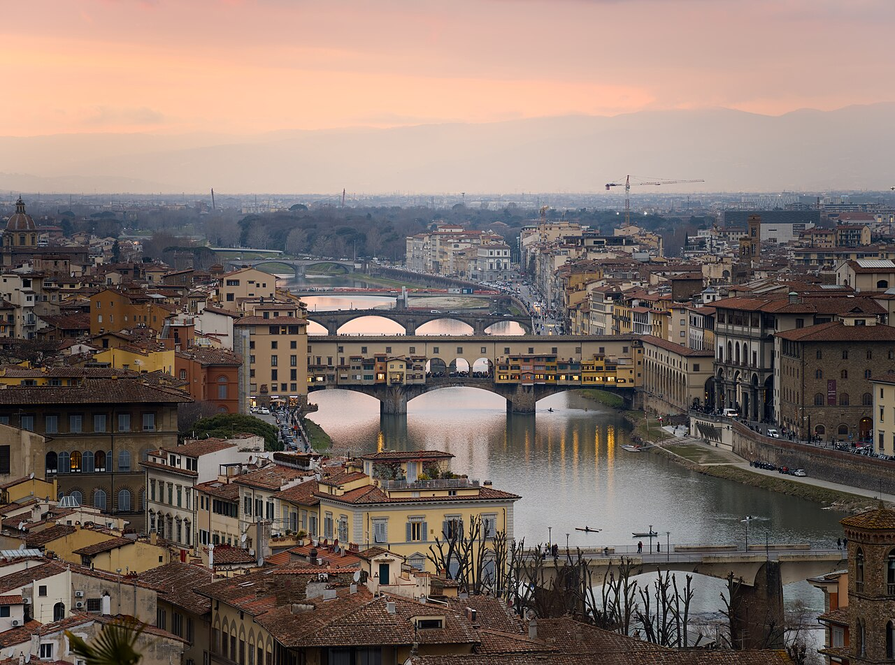

Lume Arno
Florence in morning light
A quiet guide to the city’s stone, river, and rooms of art—shaped for unhurried days.
The city
Where the river holds the day
Florence rewards a slower pace: early walks before the squares fill, long pauses under ochre façades, and evenings when the Arno turns to copper. Lume Arno maps that rhythm— not every checklist, just the places that still feel like Florence.

Ways in
Choose how you want to arrive
Three paths through the city—pick one, or wander between them.
Before you go
Arrive with a simple plan
Timing, tickets, and how to move through the historic center without racing the day.
Open the visit guide